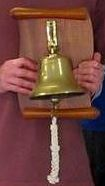

The Bell Trophy
The Society ran the first O&CSS Generations Event in 1991 and this team racing event immediately became a very popular one in the calendar. The competition traditionally takes place at Farmoor, with OUYC providing the organisational support. This is because of the excellent facilities at Farmoor and the plentiful supply of Firefly flights there.
Teams are generally composed of sailors from a particular decade, cross-decades in extremis. A famously opaque handicapping system makes allowances for older decades and teams that field six helmsmen. The trophy for the event is a bell, presented by West Kirby SC on the Society’s 50th Anniversary (1984). West Kirby wished to mark the close association between the two clubs – particularly in the initiation of the Wilson Trophy in 1949.
| Year | Winner |
|---|---|
| 2022 (30th Event) | Cambridge Mid 10s |
| 2021 | Cambridge 80s |
| 2020 | COVID |
| 2019 | Oxford 70s |
| 2018 | Oxford Current |
| 2017 | Cambridge 10s |
| 2016 (25th Event) | Cambridge Early 00s |
| 2015 | Calms (Not enough racing to declare a winner) |
| 2014 | Oxford Late 00s (Cooper) |
| 2013 | Cambridge 90s Mixed |
| 2012 | Oxford 70s/80s/90s |
| 2011 | Oxford 90s |
| 2010 | Cambridge Early 00s |
| 2009 | Tabby Cats (Cambridge 90s) |
| 2008 | Cambridge 00s |
| 2007 | Oxford 00s |
| 2006 | Cambridge 70s |
| 2005 | Oxford 00s |
| 2004 | Cambridge 00s |
| 2003 | Oxford 80s |
| 2002 | Oxford 00s |
| 2001 | Oxford 00s |
| 2000 | Foot & Mouth epidemic |
| 1999 | Cambridge Current |
| 1998 | Cambridge 90s |
| 1997 | Oxford 80s/90s |
| 1996 | Cambridge 90s |
| 1995 | ***No record of winner*** |
| 1994 | Cambridge 70s |
| 1993 | Oxford Current |
| 1992 | Cambridge 90s |
| 1991 | Cambridge 90s |